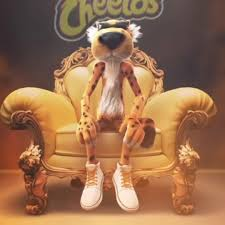
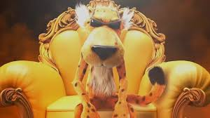
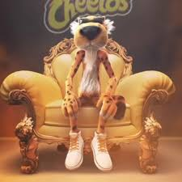
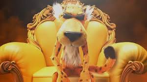

Sobre o Chester Cheetah
Chester Cheetah é o mascote icônico da marca de salgadinhos Cheetos, conhecido por seu estilo descolado e personalidade aventureira. Ele é frequentemente visto usando óculos de sol e roupas casuais, refletindo seu espírito descontraído e divertido.
Desde a sua criação, Chester tem sido uma figura central nas campanhas publicitárias da Cheetos, utilizando seu charme e sagacidade para conquistar fãs de todas as idades. Ele é frequentemente retratado em cenários emocionantes, reforçando a ideia de que Cheetos é o lanche perfeito para qualquer aventura.
Chester é mais do que apenas um mascote; ele é um símbolo de diversão e entusiasmo. Sua presença vibrante e suas travessuras muitas vezes hilárias fazem dele um personagem memorável e querido no mundo dos snacks.
Com seu lema "It's not easy being cheesy," Chester continua a ser um embaixador do sabor e da alegria, lembrando a todos que a vida é mais divertida com um pouco de queijo.